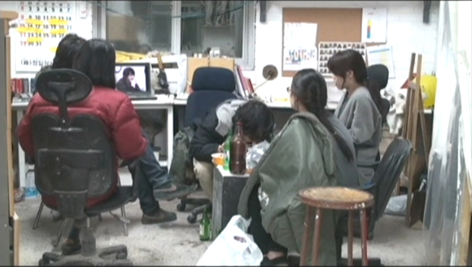
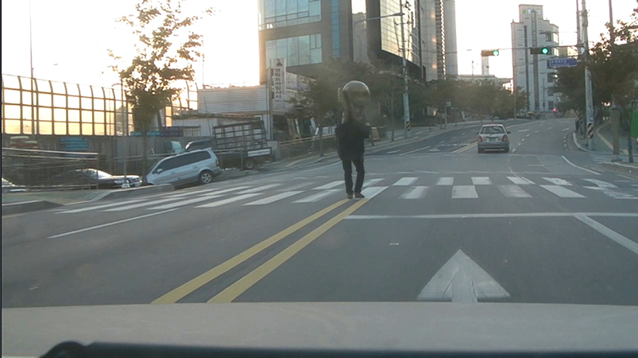
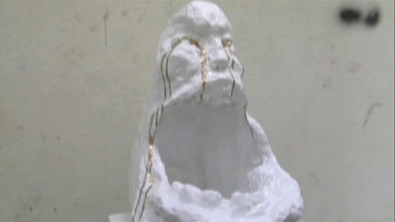
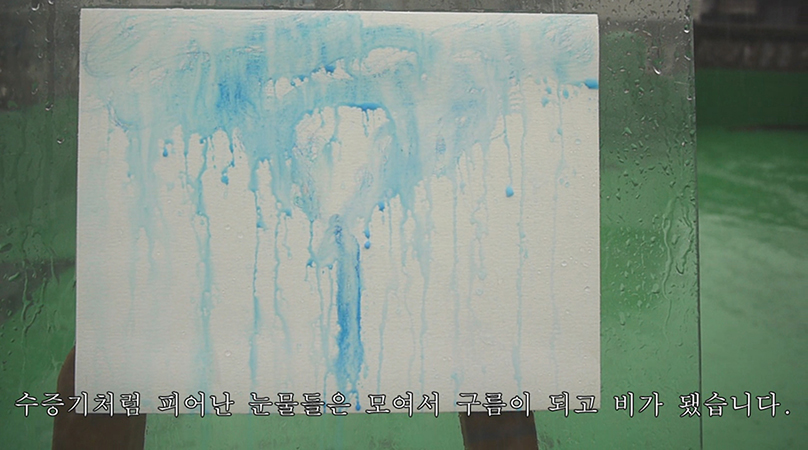
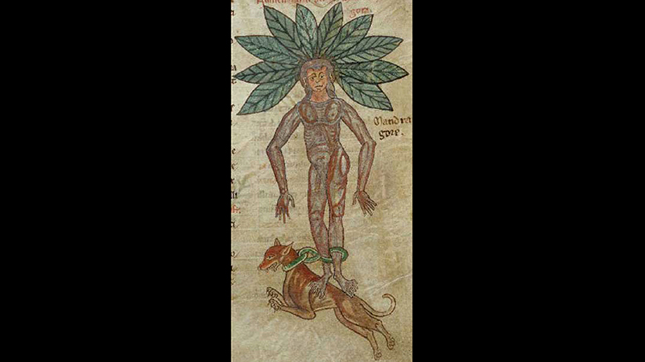

- 2013. 7. 27. 20:00
- 인사미술공간 Insa Art Space
- *작가의 요청에 의해 비디오가 제공되지 않습니다.
- 엄귀현 Uhm Qui / 1985~
- 잠시 정차한 자동차에 천천히 다가와 억지로 치이고는 기어코 드러눕는 남자의 영상이 Youtube에 올라온다. 돈 좀 벌어보려던 남자의 세계는 블랙박스에 의해 민낯을 드러내고, ‘살만한 세상’ 속을 누비던 운전자의 세계는 허망하게 깨진다. SF와 판타지를 즐겨보는 엄귀현은, 세계관이 깨지면서 발견되는 빈틈을 시작점 삼아 상상의 세계를 직조한다.
- <금강권>, 1'32'', 2009
- 광고영상과 상품의 상호보완적인 관계를 영상작품과 조각작품에도 대입한다.
- <취권 Drunken Master>, 5', 2009
- 필름이 끊길 때까지 과음을 하는 술자리를 녹화한 뒤 다음날 기억나는 부분은 삭제하고 기억나지 않는 부분만 남긴 채 편집한 영상.
- <환희 ActionMovie>, 1'43'', 2010
- 뭉크의 절규를 연상시키는 인형 탈과 블랙박스 사기 영상.
- <미술시마이>, 2'39'', 2010
- 누구라도 한번 보면 감동을 이기지 못해 경기를 일으키고 울며불며 실신하고 경탄을 내뱉는 조각작품이 나타났다.
- <눈물이뭉게뭉게>, 6'52'', 2012
- 눈물이 흐르지 않고 수증기처럼 나와 구름이 되고 비가 내리는 세계의 단상들.
- <You Can Run Away Screaming>, 37'34'', 2013
- 사람형상의 뿌리를 가지고 있고, 그 뿌리를 뽑으면 비명을 지르며 도망간다는 중세서양신화의 식물 맨드레이크가 한국에 나타났다.
-

-

-

-

-
